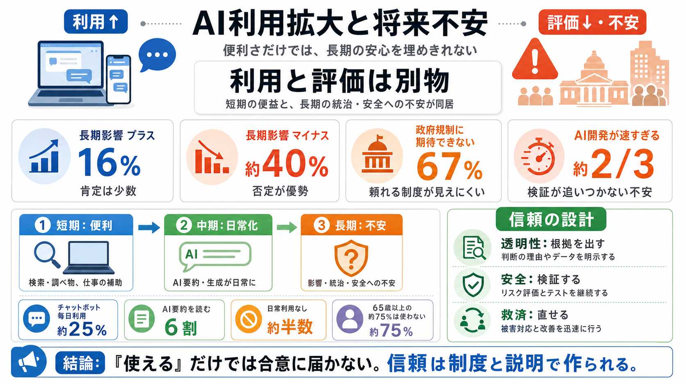

How Americans' opinions and use of AI differ by age | Pew Research Center
This study is Pew Research Center’s latest effort to explore how Americans use and view artificial intelligence (AI). Th…

This study is Pew Research Center’s latest effort to explore how Americans use and view artificial intelligence (AI). Th…
#### [Americans and AI 2026: Chatbots, Smart Devices and Views on Impact](https://www.pewresearch.org/internet/2026/06/1…
* **UK:** In the UK, 41% of online adults (16+) say they used a generative AI tool in the past year.. How many people us…
(Patrick Fallon/AFP via Getty Images)]()](https://www.pewresearch.org/short-reads/2026/03/12/key-findings-about-how-amer…
**Americans continue to be wary of AI’s impact on daily life.** Half of U.S. adults say the increased use of AI in daily…